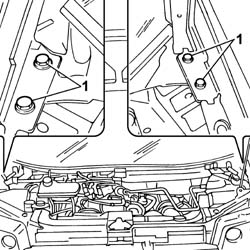
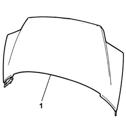

7210E20 R.R. BONNET LID
- Path
- Procedures > 72 PANELS AND FRAME > 7210 REMOVING REFITTING > 7210E EXTERNAL PARTS > 7210E20 R.R. BONNET LID
- Kind
- repair procedure (removal / refitting; the operation number is the code)
- Applies to
- all engines; all production periods
- Interactive page
- https://sloeber94.github.io/elrnDB-fUlss/en/#/179007967
Applies to: all engines; all production periods
 Removing
Removing
 Refitting
RefittingOp. 7055A18 L/H OR R/H SIDE RUBBING STRIP DECORATIVE SEAL - R+R
1. Undo the bolts fixing the bonnet to the bodyshell.

Applies to: all engines; all production periods
1. Remove the bonnet.

Applies to: all engines; all production periods
Refitting
Removing- Fit the bonnet
- Tighten the bolts fixing the bonnet to the bodyshell.
Op. 7055A18 L/H OR R/H SIDE RUBBING STRIP DECORATIVE SEAL - R+R